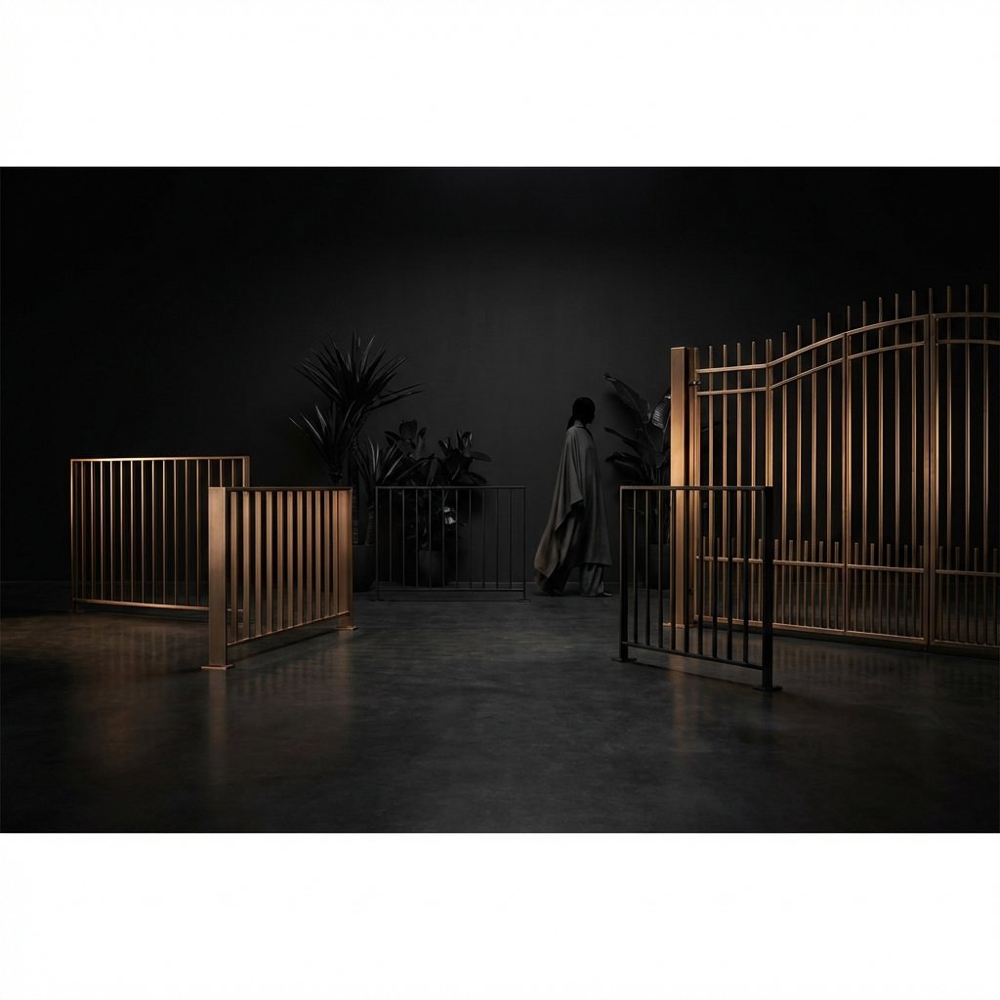
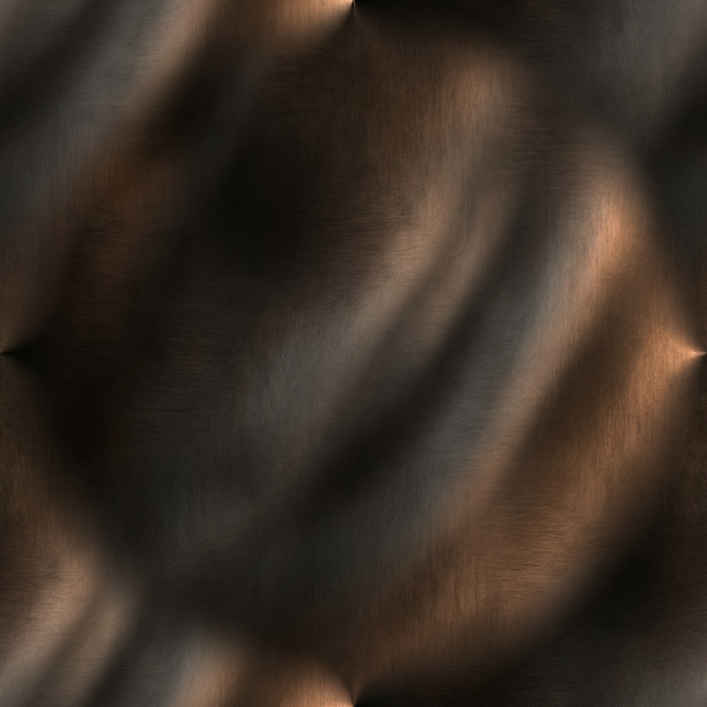

01
Entry as first impression
Every gate is positioned as the opening gesture of the home, with vertical rhythm, generous spacing, and a silhouette strong enough to anchor the facade.
Aurel Gates
0%
Aurel Gates is a hypothetical luxury fencing house creating sculptural entry gates, privacy screens, and bronze-detailed perimeter systems for residences, galleries, and hospitality spaces.


Craft and composition
The concept treats perimeter design as part of the architecture itself: calm proportions, controlled detailing, and materials that feel bespoke rather than utilitarian.
01
Every gate is positioned as the opening gesture of the home, with vertical rhythm, generous spacing, and a silhouette strong enough to anchor the facade.
02
Bronze accents soften the severity of blackened metal, introducing a quieter luxury that feels collected, tactile, and intentionally architectural.
03
Screens and perimeter systems are imagined as porous, light-aware surfaces that create security while still preserving openness and shadow play.
Composition studies
Aurel Gates frames entry, privacy, and material warmth as one continuous architectural composition.
Material language
Aurel Gates pairs matte black structural lines with brushed bronze finishes to create systems that feel residential, collectible, and deeply considered from approach to threshold.
Inquiries
For private homes, gallery courtyards, and boutique hospitality projects, the brand is positioned around custom gate systems that feel as intentional as the architecture behind them.
Request a concept